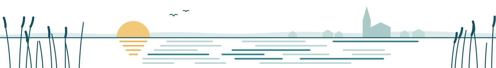

Anfahrt
So finden Sie zu uns
Plessenstraße 13, 24837 Schleswig
Die Praxis liegt mitten in der Schleswiger Altstadt, zwischen der Fußgängerzone Stadtweg und der Königstraße. Mit dem Bus erreichen Sie die Innenstadt über die Haltestelle Capitolplatz.
Augenarztpraxis in der Schleswiger Altstadt
Willkommen in der Praxis von Dr. med. Vera Christoph, Fachärztin für Augenheilkunde. Wir sind für Sie da, wenn es um Ihre Augen geht: bei der Vorsorge, bei Beschwerden, für ein Führerscheingutachten und im Notfall.
Einen Termin vereinbaren Sie am einfachsten telefonisch. Wir freuen uns auf Ihren Anruf.
| Tag | Sprechzeit |
|---|---|
| Montag | 9.00–12.00 Uhr 14.00–16.00 Uhr |
| Dienstag | 9.00–12.00 Uhr 15.00–17.00 Uhr |
| Mittwoch | 9.00–12.00 Uhr |
| Donnerstag | 9.00–12.00 Uhr 15.00–17.00 Uhr |
| Freitag | 9.00–12.00 Uhr |
… sowie nach Vereinbarung
Das Parkhaus in der Innenstadt ist gesperrt. So parken Sie in der Nähe

Über die Praxis
Gutes Sehen begleitet uns durch jeden Tag – beim Lesen, beim Autofahren, beim Blick über die Schlei. Wenn sich daran etwas verändert, möchten Sie wissen, woran Sie sind. Darum geht es uns: um sorgfältige Untersuchungen, verständliche Erklärungen und eine Behandlung, die zu Ihnen passt.
Unsere Praxis liegt in der Plessenstraße 13, mitten in der Altstadt zwischen Stadtweg und Königstraße. Wir betreuen Patientinnen und Patienten aus Schleswig und Umgebung – beim ersten Besuch ebenso wie bei regelmäßigen Verlaufskontrollen.
Dr. med. Vera ChristophFachärztin für Augenheilkunde
Leistungen
Von der Vorsorge bis zur Laserbehandlung beim Nachstar: Hier sehen Sie, was wir untersuchen und behandeln – und bei welchen Beschwerden Sie nicht abwarten sollten.
Sehtest und Brillenverordnung, Augendruck, Vorsorge bei grünem Star und Makuladegeneration, Hilfe bei Beschwerden.
19 Leistungen
Genaue Messungen von Netzhaut, Sehnerv, Hornhaut und Gesichtsfeld, zum Beispiel mit der OCT.
11 Leistungen
Wenn sich nach einer Operation des grauen Stars ein Nachstar bildet: Behandlung mit dem YAG-Laser.
6 Leistungen
Alle vorgeschriebenen Sehtests und die Bescheinigung für die Führerscheinstelle.
7 Leistungen
Plötzliche Sehstörungen, Verletzungen oder starke Schmerzen: Hier lesen Sie, wann Sie sofort handeln sollten.
10 Notfall-Anlässe
Die vollständige Liste mit Erklärungen zu jedem Bereich.
Fünf Bereiche, von der Vorsorge bis zum Notfall
Ihr Besuch
Werden Ihre Pupillen für die Untersuchung erweitert, sehen Sie danach einige Stunden lang unscharf und sind blendempfindlich. Kommen Sie dann bitte nicht mit dem eigenen Auto und bringen Sie eine Sonnenbrille mit.
Anfahrt
Plessenstraße 13, 24837 Schleswig
Die Praxis liegt mitten in der Schleswiger Altstadt, zwischen der Fußgängerzone Stadtweg und der Königstraße. Mit dem Bus erreichen Sie die Innenstadt über die Haltestelle Capitolplatz.
Das städtische Parkhaus in der Innenstadt ist seit Januar 2026 gesperrt und wird neu gebaut. Nah an der Praxis parken Sie zum Beispiel am SchleiCenter oder an der Alten Feuerwache – dort ist das Kurzzeitparken oft zwei Stunden kostenfrei. Überdacht stehen Sie im GEWOBA-Parkhaus.